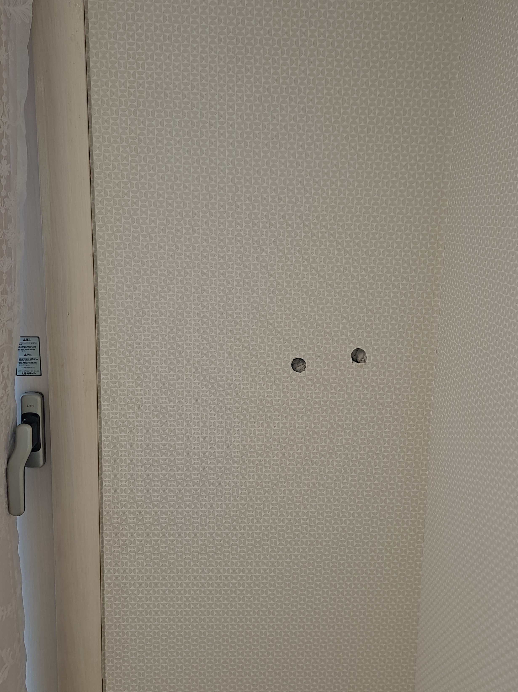
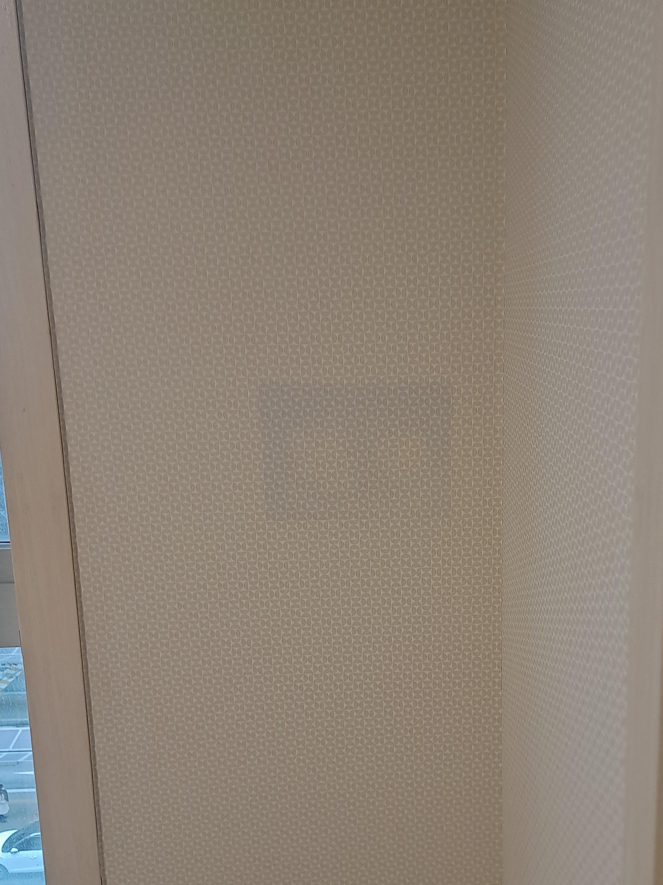

보양·손상 확인
주변 공간을 보호하고 벽 구멍의 크기, 깊이, 석고보드와 벽지의 유실 범위를 확인합니다.
아이들이 도구를 가지고 장난치다가 벽을 찍으면서 석고보드가 깨지고, 표면의 입체 무늬 벽지까지 원형으로 찢어진 현장입니다. 두 군데 모두 내부 석고가 드러나 단순히 벽지만 붙이는 방식이 아니라 파손된 벽체부터 안정적으로 복원해야 했습니다.

석고벽은 충격을 받으면 표면의 벽지뿐 아니라 안쪽 석고보드까지 깨지거나 눌릴 수 있습니다. 표면만 가리면 형태가 안정적으로 유지되기 어려워, 구멍의 크기와 깊이·주변 균열을 먼저 확인한 뒤 내부부터 보강합니다.
손상 부위를 단순히 덮지 않고 석고벽의 형태를 먼저 복구한 뒤, 기존 벽지의 색과 반복 무늬가 자연스럽게 이어지도록 마무리합니다.
주변 공간을 보호하고 벽 구멍의 크기, 깊이, 석고보드와 벽지의 유실 범위를 확인합니다.
약해진 가장자리를 정리하고 파손된 내부를 안정적으로 보강해 벽의 기본 형태를 복원합니다.
복원 부위가 주변 벽보다 튀어나오거나 들어가지 않도록 높이와 면을 세밀하게 맞춥니다.
기존 벽지의 색감과 작은 입체 패턴을 확인해 손상 부위가 자연스럽게 연결되도록 마감합니다.
깨진 석고벽 내부를 보강하고 벽면 높이를 맞춘 뒤, 기존 벽지의 반복 무늬가 이어지도록 부분 복원했습니다.

“찢어진 벽지가 이렇게 깔끔하게 복원되는 줄 몰랐어요! 도배 안 해도 깔끔하게 수리되네요~!”
모든 석고벽 파손을 부분복원으로 해결하는 것은 아닙니다. 구멍의 크기와 벽지 유실 범위를 확인한 뒤 더 자연스럽고 안정적인 방법을 안내합니다.
벽 전체와 손상 부위를 함께 보내주시면 부분보수와 한 벽면 도배 중 적합한 방법을 안내합니다.